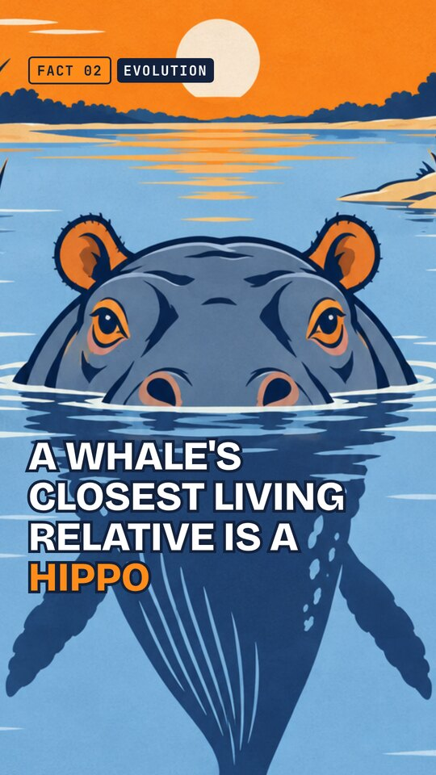
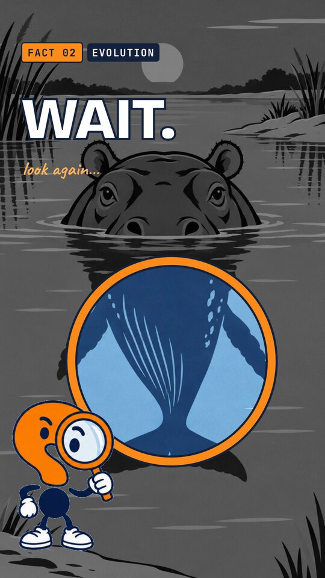
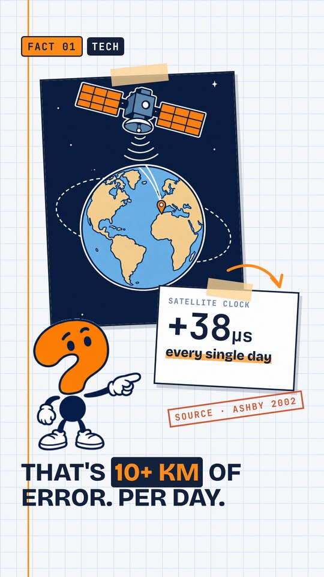
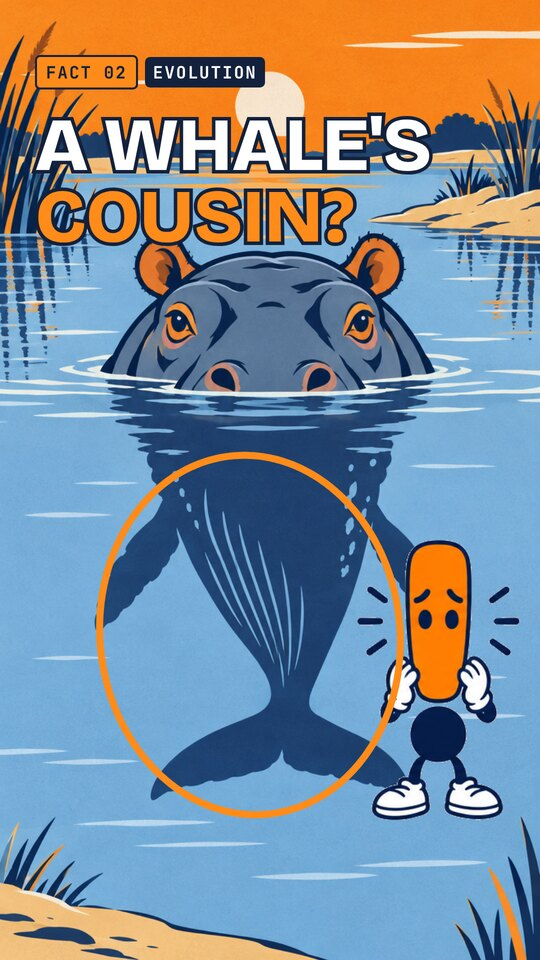
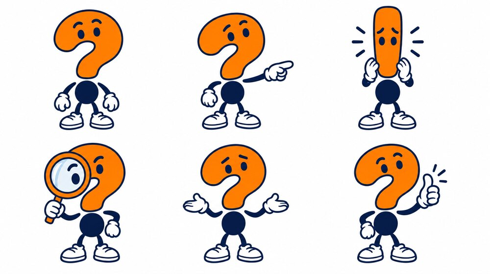
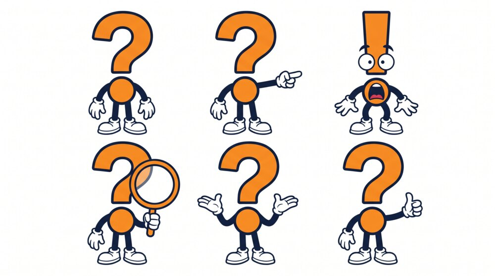
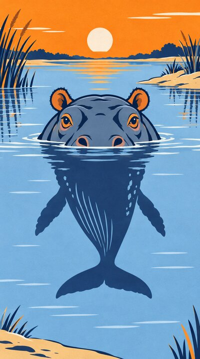
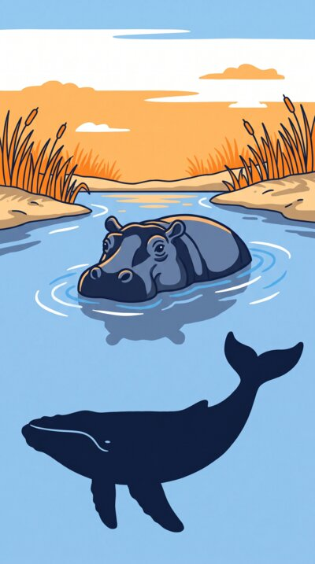
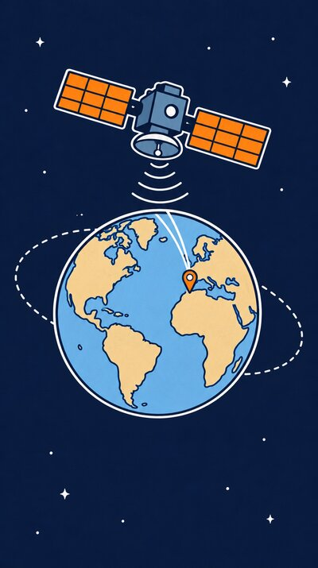
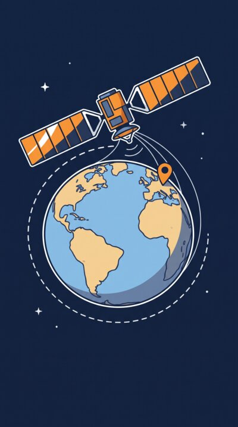

Wait, That's a Fact? · look test · 10.5 credits spent
The Second Look, in real frames
The art comes from three Higgsfield generations: Mark's sheet, a hippo scene and a satellite scene. I composed them here with the brand kit, the same way the real edit will work. Judge the direction from these; production quality will be higher (notes at the bottom).
Four frames from the new system

Hook, 0–3 s. Full-bleed scene, the claim in huge outlined type, the FACT badge. The whale-shaped reflection is already there for anyone who looks closely.

The Second-Look Lens. The frame freezes and goes grey, the narrator says "Wait.", and the lens shows the truth in colour. Mark is the one doing the looking. In the edit the lens slides across.

Notebook fact frame. Light graph paper, the art taped in like a case file, the number on an index card, a SOURCE stamp and a highlighter. The art never contains text, so every figure stays accurate.

Cover. Two or three huge words, an orange circle on the evidence, and Mark's "!" double-take as the emotional cue.
Mark: model comparison
PICKED · GPT Image 2.5 · 1.5 cr

On spec: the navy dot body makes the whole silhouette read as "?". There's a face in every pose, and the shock pose turns cleanly into "!". The proportions match across all six poses.Nano Banana Pro · 2 cr

Off spec: the body came out orange, so the silhouette no longer reads as "?". Only one pose has a face, which leaves much less to act with.
Scenes: model comparison
PICKED · GPT

The reflection really is a whale, which is exactly what the lens needs.Nano Banana Pro

The whale is a separate animal under the water, so the reflection idea is lost.PICKED · GPT

White outlines on navy as specified; the pin and orbit are clear.Nano Banana Pro

Also good, but the outlines drift from the spec.
None of the six images contains stray text or numbers.
What production adds
Mark's poses are generated one at a time with transparent backgrounds at full resolution. These cut-outs from the sheet are low-res and a little soft.
Scenes are generated at 2K, so the full-bleed shots stay sharp at 1080×1920.
One Mark double-take clip ("?" to "!") is animated once and reused in every episode.
Everything moves: slow pushes, the lens sliding in, cards dropping in with a tape-rip sound, highlighter wipes.
Credit ledger
Balance before: 594.6 Look test: −10.5 (6 images, quoted before running) Balance now: 584.1 Cap for the project: 297.0 · spent 10.5 · left 286.5